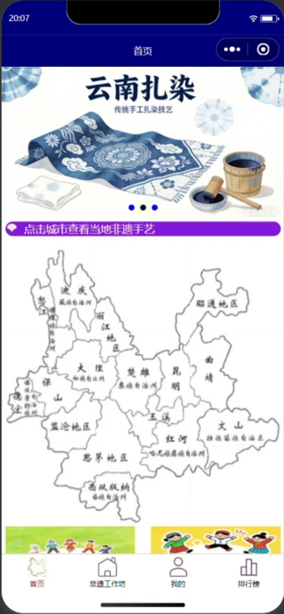

你的照片+
ABOUT ME以真实经历，慢慢填满这里
SELECTED WORK · 作品集
把想法做成体验，
让作品替我表达。
从云南非遗体验平台开始，看看一个想法如何成为可探索的数字作品。

WEB DESIGN · PRODUCT STORY让云南手艺，
被看见，也被体验。
一张地图发现非遗，一段影像认识技艺，再从课程、手作好物与线下活动，走近云南文化日常。
带有“在此填写”的内容是个人资料占位文字，可替换为你的姓名、经历、方向与照片。